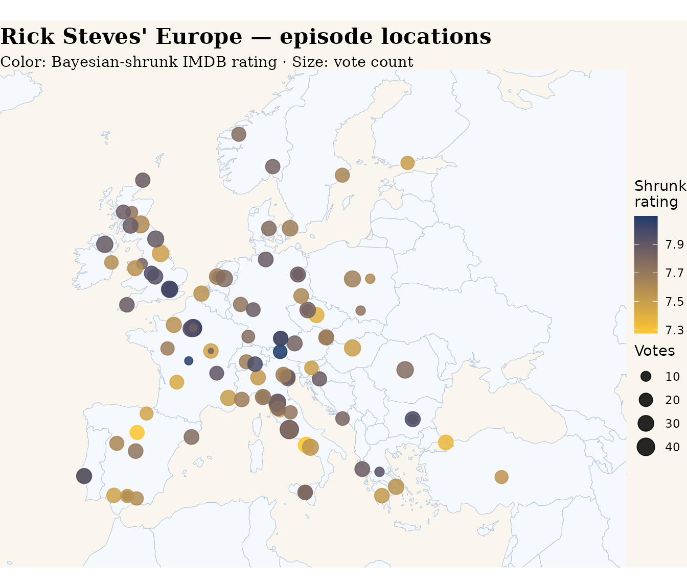

library(steves)
library(dplyr)
#>
#> Attaching package: 'dplyr'
#> The following objects are masked from 'package:stats':
#>
#> filter, lag
#> The following objects are masked from 'package:base':
#>
#> intersect, setdiff, setequal, union
library(ggplot2)Where does the show go?
primary_destination is geocoded to lat /
long via OSM Nominatim, with a fallback chain (full place →
first place name → country centroid → average of capital cities for
multi-country compilations). The geo_match column flags
which tier resolved each row, so you can filter out coarse fallbacks for
sharper maps.
episodes |>
count(geo_match)
#> # A tibble: 5 × 2
#> geo_match n
#> <chr> <int>
#> 1 centroid 9
#> 2 country 8
#> 3 full 108
#> 4 simple 23
#> 5 NA 11A static atlas
world <- map_data("world")
episodes |>
filter(!is.na(lat), geo_match %in% c("full", "simple")) |>
ggplot() +
geom_polygon(data = world,
aes(long, lat, group = group),
fill = "#F5F8FC", color = "#B5C7DB", linewidth = 0.2) +
geom_point(aes(long, lat, color = imdb_rating_shrunk,
size = imdb_votes),
alpha = 0.85) +
coord_quickmap(xlim = c(-15, 45), ylim = c(34, 65)) +
scale_color_gradient(low = "#FFC72C", high = "#1B3A6B",
name = "Shrunk\nrating") +
scale_size_continuous(range = c(1.5, 6), name = "Votes") +
labs(title = "Rick Steves' Europe — episode locations",
subtitle = "Color: Bayesian-shrunk IMDB rating · Size: vote count",
x = NULL, y = NULL) +
theme_void() +
theme(plot.background = element_rect(fill = "#FAF6EE", color = NA),
panel.background = element_rect(fill = "#FAF6EE", color = NA),
plot.title = element_text(family = "serif",
face = "bold", size = 16),
plot.subtitle = element_text(family = "serif", size = 11))
#> Warning: Removed 7 rows containing missing values or values outside the scale range
#> (`geom_point()`).